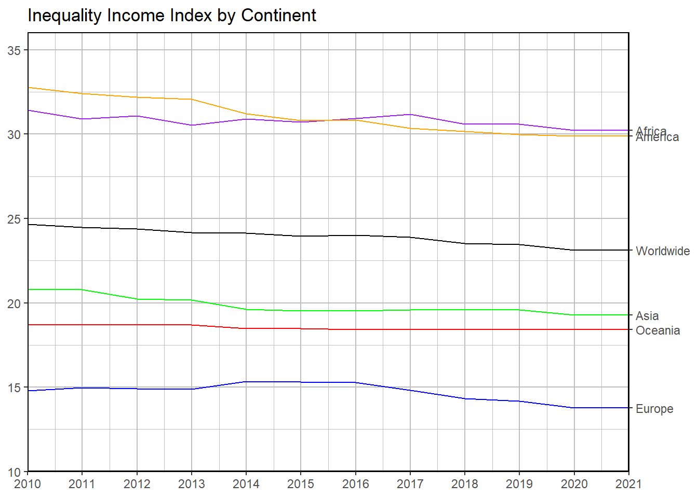

Having grown up in one of the most unequal societies in the world (Latin America), I have been able to observe the significant impact that economic inequality has on a society, on the behavior of its individuals, their aspirations, and their ideals. While this is a topic with a deep sociological perspective and extensive complexity, for this project, I would like to address simple and interesting relationships between variables related to economic inequality in different countries around the world.
Summary of Data Tables
For this project, three different databases will be used. One of them contains information on socioeconomic inequality indices and Human Development by country (obtained from Kraggle) . The second database includes information on the cost of living, purchasing power, and average monthly income by country (obtained from Kraggle). Lastly, the third database provides information on the percentage of total monthly income generated in a country that is obtained by the top 10% richest of the population (obtained from World Inequality Database).
To create the master database, the three databases are merged using the variable “Country” as the key. As a result, we obtain a database with the following information for more than 100 countries:
The following objects are masked from 'package:data.table':
between, first, last
The following objects are masked from 'package:stats':
filter, lag
The following objects are masked from 'package:base':
intersect, setdiff, setequal, union
library(knitr)
Warning: package 'knitr' was built under R version 4.4.2
db1<-fread("cost of life.csv")db2<-fread("inequality in income.csv")db3<-fread("wealthiest.csv")data<-merge(db2,db1,by="country",all.x = T)data<-merge(data,db3,by="country",all.x = T)vars<-names(data)descvars<-c("Name of the Country","Name of the Continent","Human Development Group: Low,Medium,High,Very High", "Index of Inequality Income: Number from 0 to 100","","","","","","","","","","","","","Cost of Life Index: A numerical value that quantifies the cost of living in each country","Purchasing Power Index: A numerical value that quantifies the purchasing power of the population in each country","Percentage of the total income of a country which is obtained for the 10% wealthiest")summaryvars<-data.frame("Variables"=vars,"Description"=descvars)kable(summaryvars,format ="html")
Variables
Description
country
Name of the Country
continent
Name of the Continent
HDGroup
Human Development Group: Low,Medium,High,Very High
InequalityIncome2010
Index of Inequality Income: Number from 0 to 100
InequalityIncome2011
InequalityIncome2012
InequalityIncome2013
InequalityIncome2014
InequalityIncome2015
InequalityIncome2016
InequalityIncome2017
InequalityIncome2018
InequalityIncome2019
InequalityIncome2020
InequalityIncome2021
cost_index
monthly_income
Cost of Life Index: A numerical value that quantifies the cost of living in each country
purchasingpower_index
Purchasing Power Index: A numerical value that quantifies the purchasing power of the population in each country
shareofwealthiest
Percentage of the total income of a country which is obtained for the 10% wealthiest
Income Inequality
To begin with, it is intriguing to examine the behavior of InequalityIncome over recent years. To this end, curves can be generated to illustrate how this variable has evolved overall, by continents, and by HDI groups.
ggplot(data= total_avg_data, aes(x = Year,y = avg_inequality,colour = continent,group = continent )) +geom_line() +scale_colour_manual(values =c("Worldwide"="black", "Africa"="purple", "Asia"="green", "Europe"="blue", "Oceania"="red", "America"="orange") ) +theme(panel.border =element_rect(colour ="black", fill =NA, size =0.8),panel.background =element_rect(fill ="white"),panel.grid.major =element_line(color ="grey", linewidth =0.5),panel.grid.minor =element_line(color ="grey", linewidth =0.25),legend.position ="none", ) +scale_y_continuous(sec.axis =dup_axis(breaks = total_avg_data |>group_by(continent) |>summarise(avg_inequality =last(avg_inequality)) |>pull(avg_inequality),labels = total_avg_data |>group_by(continent) |>summarise(avg_inequality =last(avg_inequality)) |>pull(continent),name =NULL ), expand =c(0, 0),limits =c(10, max(total_avg_data$avg_inequality) *1.1) ) +scale_x_continuous(expand =c(0, 0),breaks =seq(min(total_avg_data$Year), max(total_avg_data$Year), by =1) ) +labs(title ="Inequality Income Index by Continent",x =NULL,y =NULL ) +geom_text(data = total_avg_data |>group_by(continent) |>slice_tail(n =1), # Selecciona el último valor de cada continenteaes(label = continent, colour = continent),hjust =-0.2, # Ajusta la posición de la etiquetasize =3.5 ) -> IIContinentGraph
Warning: The `size` argument of `element_rect()` is deprecated as of ggplot2 3.4.0.
ℹ Please use the `linewidth` argument instead.
# Imprimir el gráficoprint(IIContinentGraph)

Income Inequality
To begin with, it is intriguing to examine the behavior of InequalityIncome over recent years. To this end, curves can be generated to illustrate how this variable has evolved overall, by continents, and by HDI groups.